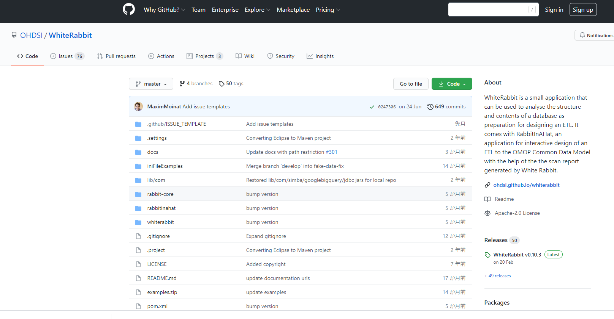
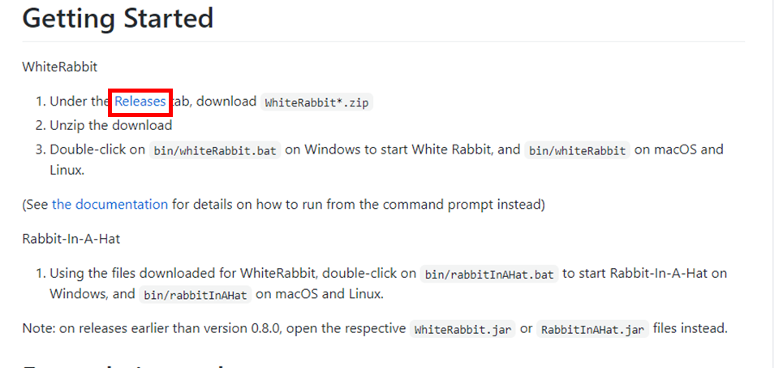
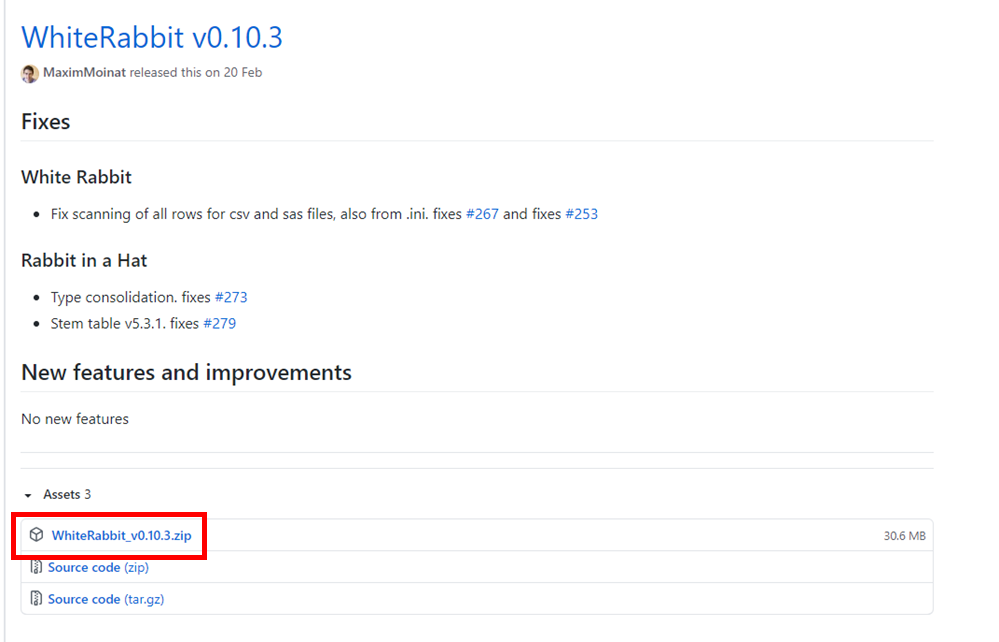
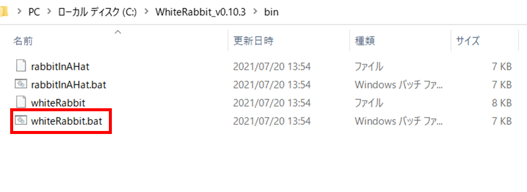
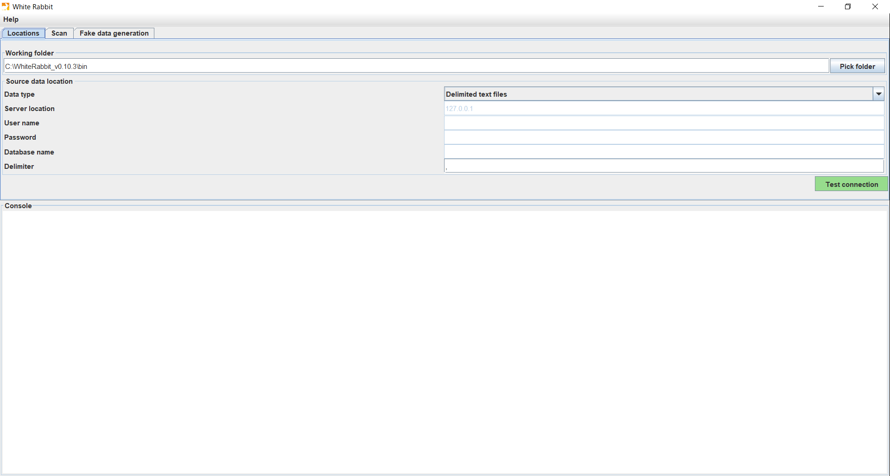
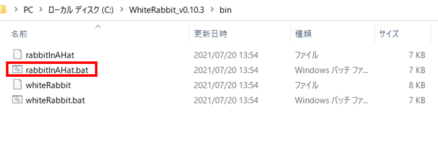
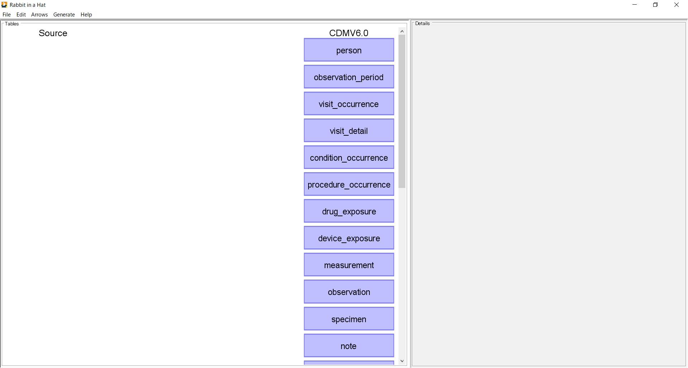
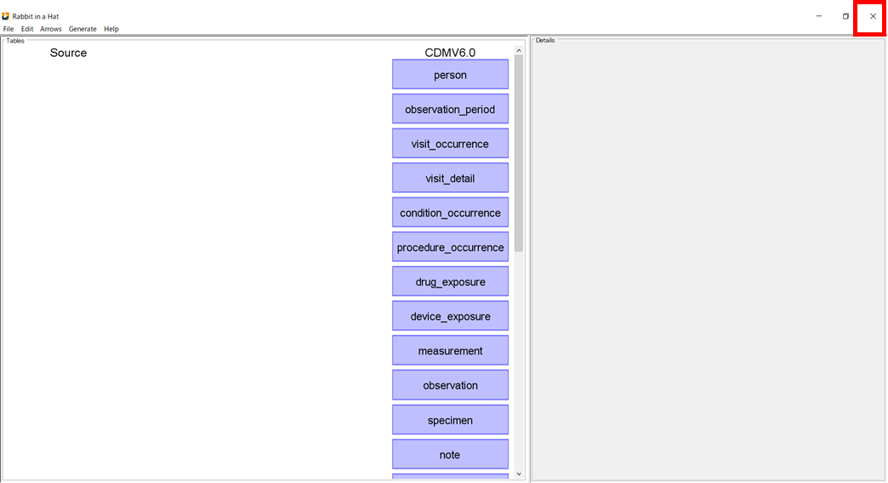

2．White Rabbit・Rabbit-in-a-Hat のセットアップ
White Rabbit をセットアップするための手順を説明します。
本セットアップ手順は、以下の環境が準備されていることを前提としています。
作業の所要時間は約1時間です。
White Rabbit・Rabbit-in-a-Hat の動作環境を構築します。
GithubのOHDSI/WhiteRabbit にアクセスして、セットアップを進めていきます。

GithubのOHDSI/USAGIページの［Getting Started］項目内の Releases（赤枠）をクリックします。

WhiteRabbit_v0.10.3.zip（赤枠）をクリックしてダウンロードします。
本ファイル内には、White Rabbit と Rabbit-in-a-Hat のファイルが格納されています。
（バージョンが異なる場合、参考資料とファイル名も異なるためご注意ください。）

ダウンロードが完了したらファイルを右クリックし、［すべて展開］を選択して、任意の展開先を参照して解凍し、保存します。
２．１でダウンロードしたファイルの［bin］フォルダを開きます。

［bin］フォルダ内の whiteRabbit.bat をダブルクリックすると、White Rabbit が起動して画面が表示されます。
White Rabbit 終了時は、画面右上の［×］をクリックして画面を閉じます。

2．2と同様の手順で起動することができます。
3．2でダウンロードしたファイルの［bin］フォルダを開きます。

RabbitInAHat.bat をダブルクリックすると、Rabbit-in-a-Hatが起動して画面が表示されます。

Rabbit-in-a-Hat 終了時は、画面右上の［×］をクリックして画面を閉じます。
